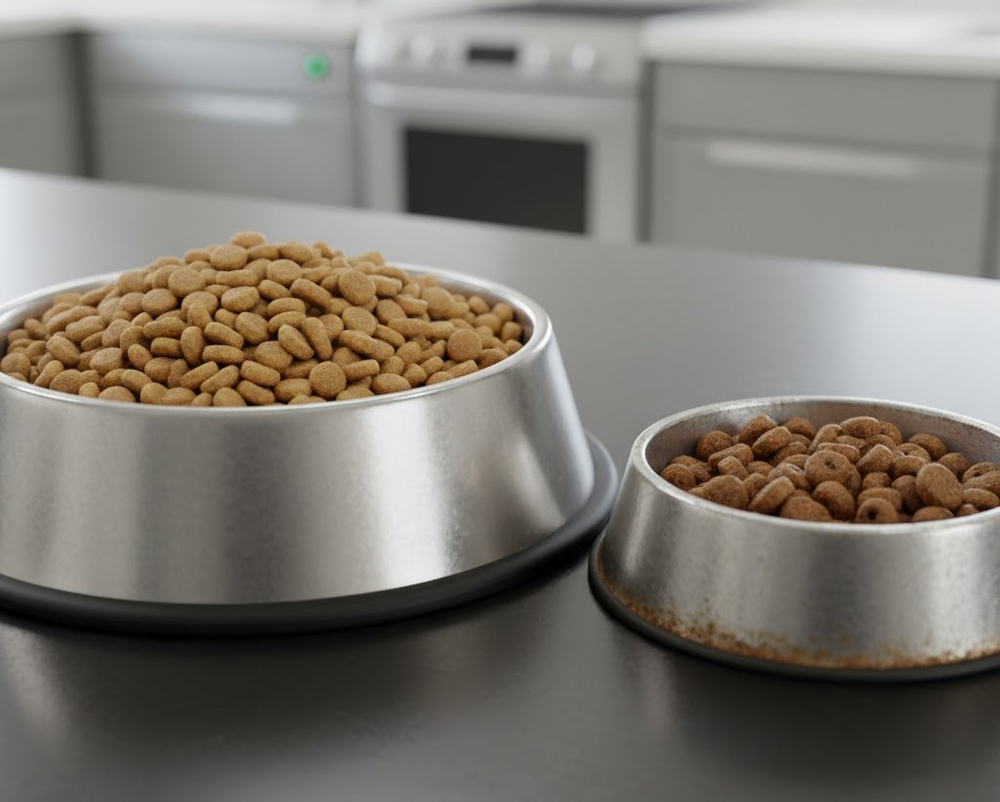

Alimentación
Guía para la transición de alimento: Cómo cambiar el balanceado sin problemas
Cambiar la dieta de tu mascota puede parecer tan simple como comprar una nueva bolsa y servirla. Sin embargo, un cambio brusco es una de las principales causas de vómitos y diarrea. Cuando decides mejorar su nutrición, por ejemplo, al pasar a una fórmula Súper Premium como Porte, es fundamental hacerlo gradualmente para asegurar una adaptación digestiva exitosa.
1. ¿Por qué es necesaria una transición lenta?
El sistema digestivo de tu perro o gato alberga una compleja colonia de bacterias (el microbioma intestinal) que está acostumbrada a procesar los ingredientes de su comida actual. Un cambio repentino de fórmula (con diferentes niveles de proteína, grasa o fibra) altera ese equilibrio.
El estómago y el páncreas también necesitan tiempo para ajustar la producción de enzimas digestivas. Una transición lenta le da al cuerpo de tu mascota el tiempo necesario para adaptarse, minimizando el riesgo de malestar digestivo.
2. El método de transición de 7 a 10 días
Este es el método más recomendado por veterinarios y nutricionistas. El objetivo es mezclar el alimento antiguo con el nuevo, aumentando progresivamente la cantidad del nuevo cada día. La duración puede variar; si tu mascota es muy sensible, extiende el proceso a 14 días.
- Días 1-2: 75% Alimento Antiguo + 25% Alimento Nuevo
- Días 3-4: 50% Alimento Antiguo + 50% Alimento Nuevo
- Días 5-6: 25% Alimento Antiguo + 75% Alimento Nuevo
- Día 7 (o 10): 100% Alimento Nuevo
3. ¿Qué hacer si aparecen problemas digestivos?
Incluso con una transición lenta, algunas mascotas pueden experimentar un ligero ablandamiento de las heces. Esto suele ser temporal.
Si notas diarrea leve, vómitos o falta de apetito, significa que estás yendo muy rápido. Lo ideal es volver al paso anterior (por ejemplo, si estabas en 50/50, vuelve a 25/75) y mantener esa proporción durante unos días más antes de intentar avanzar de nuevo.
Si los síntomas son severos o persisten por más de un día, detén la transición y consulta a tu veterinario.
4. Casos especiales: Gatos y mascotas sensibles
Los gatos pueden ser particularmente neofóbicos (aversión a lo nuevo). Con ellos, el proceso puede requerir más paciencia, a veces comenzando con solo una o dos croquetas del alimento nuevo en su plato.
En mascotas con alergias conocidas o estómagos muy sensibles, es recomendable realizar la transición bajo supervisión veterinaria, asegurándote de que los nuevos ingredientes, incluso en fórmulas de alta calidad, sean adecuados para su condición.